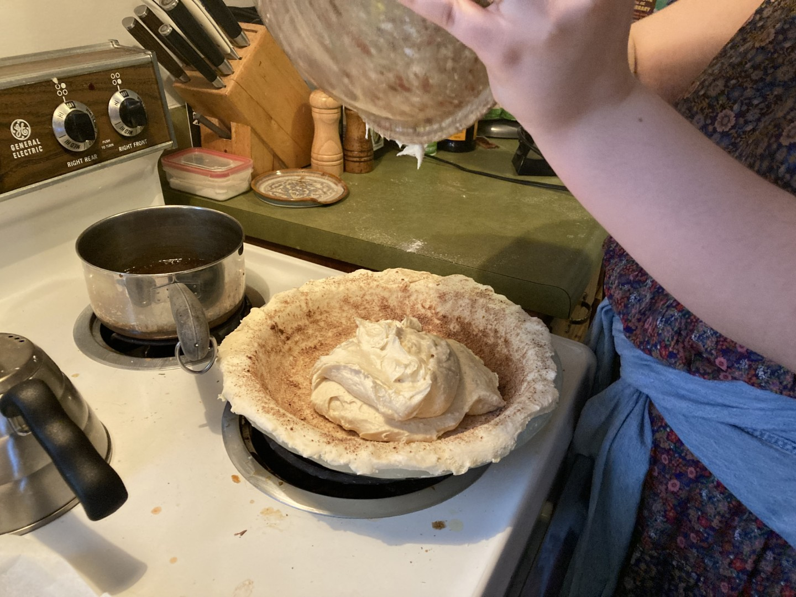
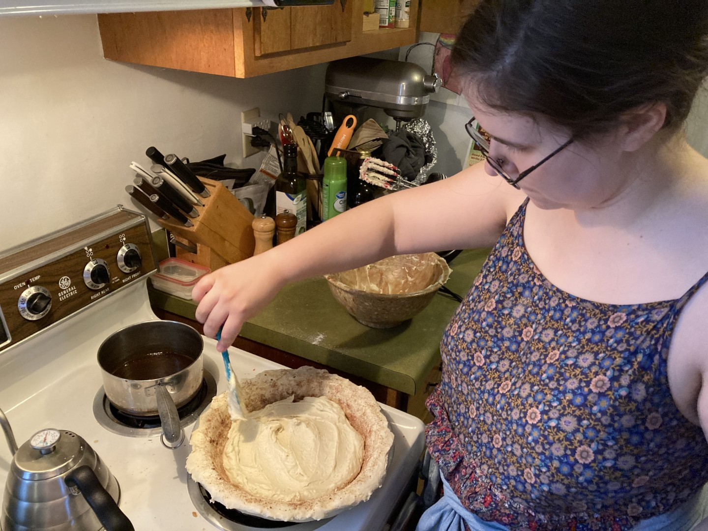
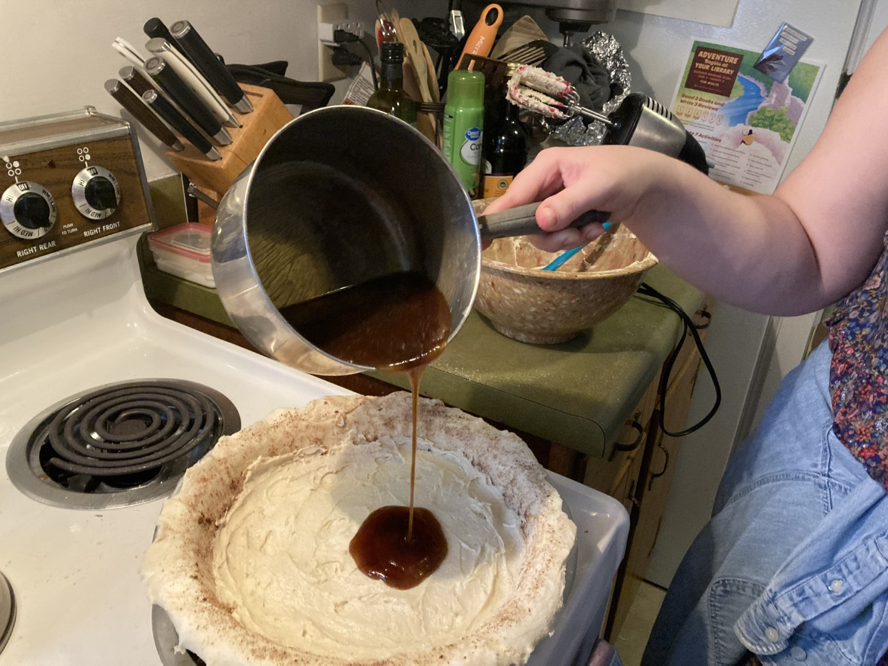
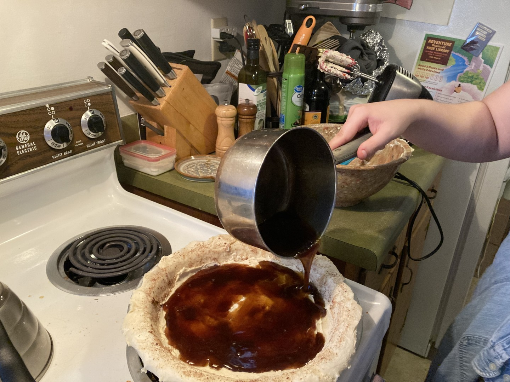
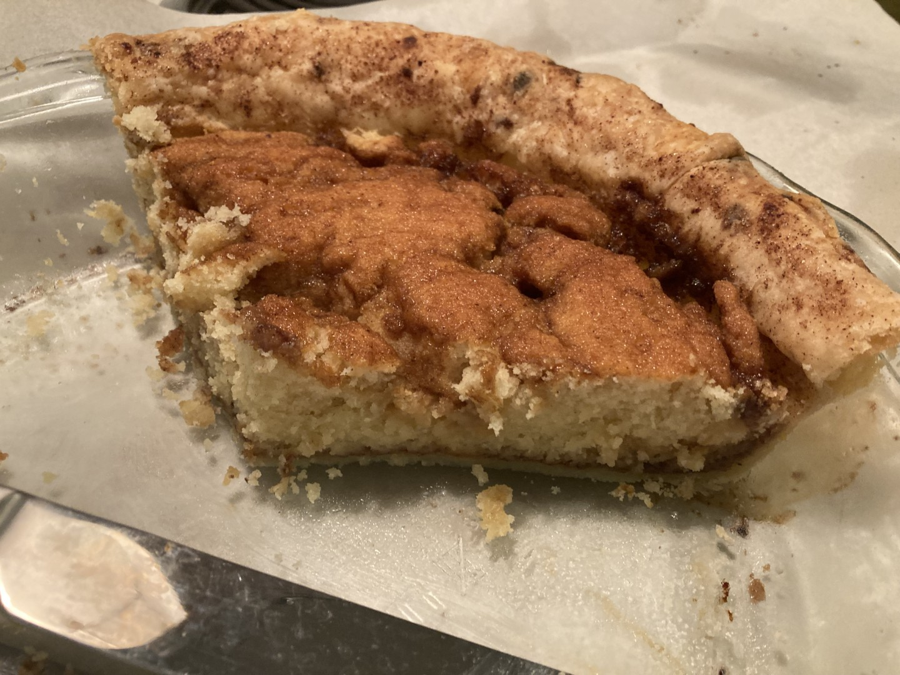

Pie 50: Snickerdoodle
2024-06-15Recipe from 50 Pies, 50 States by Stacey Mei Yan Fong, p. 75
Taste:
Difficulty:
Vibes:
Suggested pairing: a glass of milk
According to Stacey Fong, the state pie of Connecticut is snickerdoodle. As far as I can tell, she declared this unilaterally and with no legal authority. The claimed basis for her pronouncement is the cultural status of the snickerdoodle cookie in that state. Now, snickerdoodles--and nutmeg in general--are indeed popular in the Constitution State.
A full text search of the CT state laws archive returned no hits for “snickerdoodle”. I did find several online articles discussing bills, presented in multiple years, to name either the snickerdoodle or the oatmeal chocolate chip cookie as the official “state cookie”. No news articles I could find discussed a state cookie bill actually passing. Wikipedia doesn't list any state cookie, pie, or dessert for Connecticut. (Unlike Missouri, which has actually had a legal state dessert since 1904: the ice cream cone!)
I hope the preceding paragraph hasn't led you astray. This pie isn't just a cookie in a nutmeg-sprinkled crust. It's a legitimate pie, which shares with the cookie an ingredient list: flour, sugar, butter, eggs, baking soda, cream of tartar, cinnamon, and nutmeg. However, the pie filling was much wetter than cookie dough and could easily be spread around the pie crust (which was a pretty typical unbaked single crust).
 While snickerdoodle dough balls are rolled in cinnamon sugar, this pie filling was covered with a spiced hot syrup before baking.
 As the pie baked, the syrup soaked into the filling and formed a cracked crust reminiscent of the typical cookie appearance.
We served the pie to players of a D&D game. All enjoyed the pie, but the game itself was disastrous--3 out of 5 player characters died.
Like most of the best things in life, the legal status of a pie is immaterial to its quality.